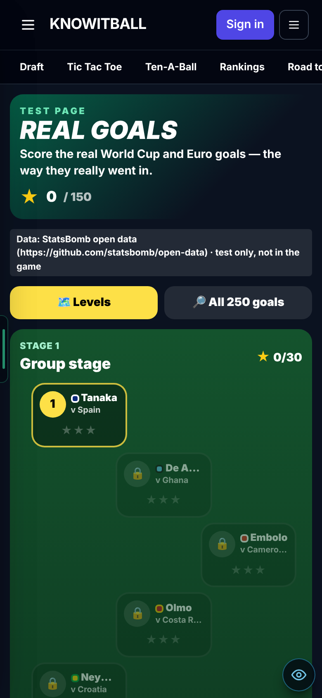
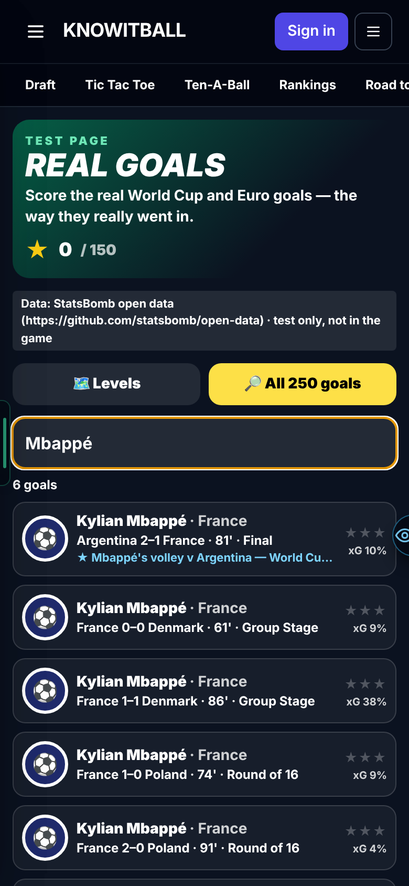
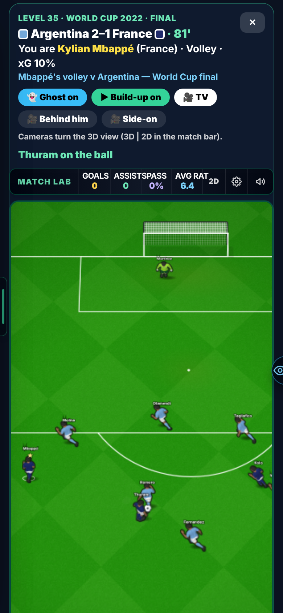
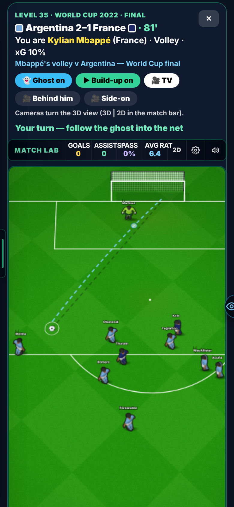
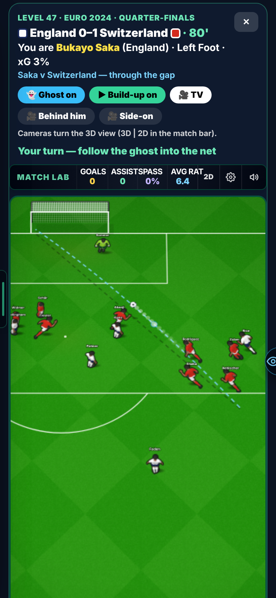
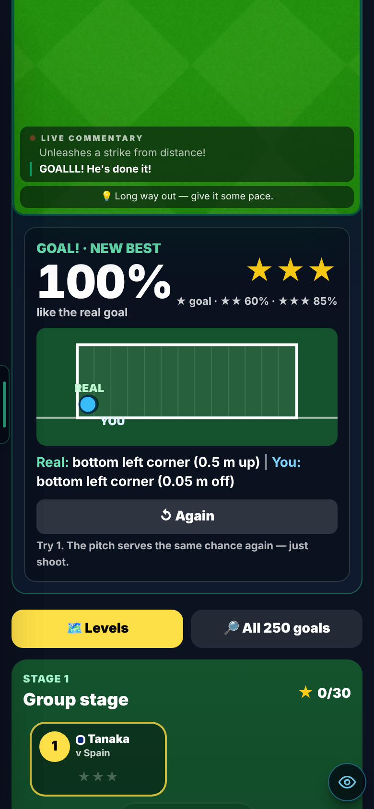
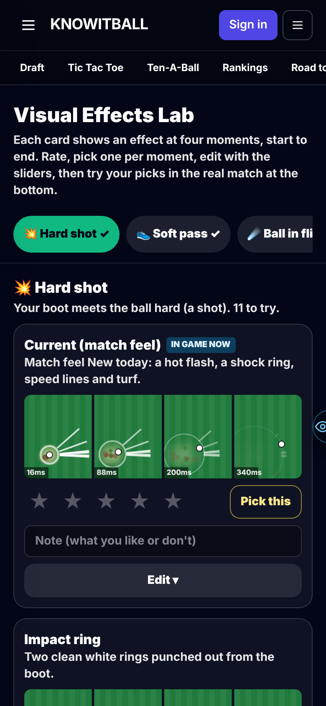
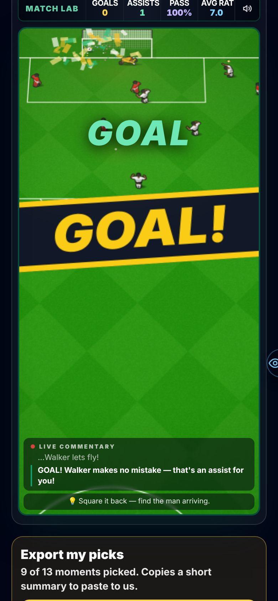

Replay real World Cup 2022 and Euro 2024 goals, with the real players and the real build-up. Score them the way they really went in. Plus a lab of visual effects to pick from. Both are test pages; your career is unchanged.
1 · A LEVEL MAP OF REAL GOALS
50 real goals in 5 stages, Group stage to The final, easiest first. Each one gives 1–3 stars. A star opens the next goal, and stars open the next stage. A search tab holds all 250 goals: Mbappé v Argentina, Neymar v Croatia, Saka v Switzerland, Güler v Georgia and the rest.

The level map. Stars are kept on your phone.

Search any goal by player, team or match.
2 · THE REAL MOVE, THE REAL PLAYERS
Before your shot, the real move plays out: every pass, run and dribble, at the real time. Every man wears his real name and his country's kit, and the header shows the real score and minute. No more City v Brighton.

Argentina v France, the World Cup final. Real names over every man.
3 · THE GHOST
A faint line and a pale ball show where the real shot went. It loops while you aim and races your ball when you shoot. Turn it on or off with the Ghost button.

Mbappé's volley: the dashed ghost from his foot into the corner.
4 · THE REAL GOAL CAN ALWAYS GO IN
Problem: a real goal through a tight gap, like Saka v Switzerland, nearly always got blocked here. Our men are wider and react faster than real ones. Fix: hit it along the real goal's line and the men who didn't stop it for real don't stop it now. Hit it somewhere else and it plays as normal.
Struck along their real line, real goals went in 1 in 3 times before. Now every one does.

Saka v Switzerland: the ball through the Swiss defenders, on the ghost line.
5 · HOW CLOSE WERE YOU?
After each try you get a big percentage: how close your ball went in to the real one. You must score to pass. Get closer for more stars.

100%, three stars. The goal picture shows the real spot and yours.
6 · CAMERA ANGLES
TV, Behind him and Side-on. They turn the 3D view, so switch the match to 3D first.
7 · VISUAL EFFECTS LAB
13 moments: the shot, the pass, the ball in flight, the first touch, the save, the catch, the dive, the post, the net, the block, the header, the near miss and the goal. Each has 7–9 different effects, plus today's look and Off. Rate them, pick one, change it with sliders, then try your picks in a real match on the same page. "Export my picks" gives me a list to put into the game.

Each card shows the effect from start to end.

Confetti and a GOAL! banner on a real goal.
Where: the admin menu → Visual Effects Lab (/star-vfx-lab-dev).
KNOWN ISSUES
Two stills were steered
In the Mbappé and Saka goal stills, the test script set the shot onto the real line. Nobody has scored them with a finger yet.
3D not seen
The camera buttons and the 3D view of Real Goals were not checked on screen. The ghost is drawn in 2D only.
Curled goals have a straight ghost
The data has where the ball started and ended, not its path.
Your own player is hidden on shots
This follows the 12 Oct rule, so the scorer's name shows in the header, not over his head.
Effects not all seen live
In the effects lab, the save, catch, dive, post, block, header and near-miss effects pass their tests but were not seen in a live match.
Test only
The licensed data's licence doesn't cover a paid game, so Real Goals stays a test page for admins.
YOUR CALLS
Shooter's skill: fixed at elite (power 85, technique 95), or the real scorer's own rating?
Stars: 60% for two, 85% for three: right?
Who sees Real Goals: admins only, or testers too?
Show your player on these shots, with the scorer's name over his head?
Effects lab: should the GOAL! banner replace the game's green GOAL text? Should the effects start bigger?
The numbers, if you want them
Real goals struck on their real line (250 goals × 8): 32% scored → 100%. With a small human wobble: 32% → 99.5%.
The 14 featured goals: 24% → 100% (96% with a wobble; the corner finishes clip the post).
Build-up ball off the real ball, on average: 6.2 m → 0.6 m. Moves replayed per goal: 2.6 → 5.0.
Real names on outfield men in featured goals: 142 of 142. Countries with their own kit: 44 of 44.
Your career's matches are unchanged: 80 strikes give the same result as before.
Previous versions
Leo v0.16 — 14 Oct 2026 — Updates tab, Henry finish, hitboxes, sound lab. Settings → Updates. Keeper realism and Hitboxes & jumping (both New). A sound lab test page.
Leo v0.15 — 12 Oct 2026 — the gameplay round. Keeper pro, shots, knuckleball, ball physics, match flow, radar. All Old by default.